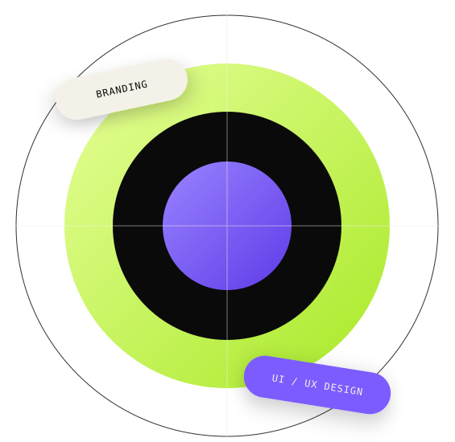
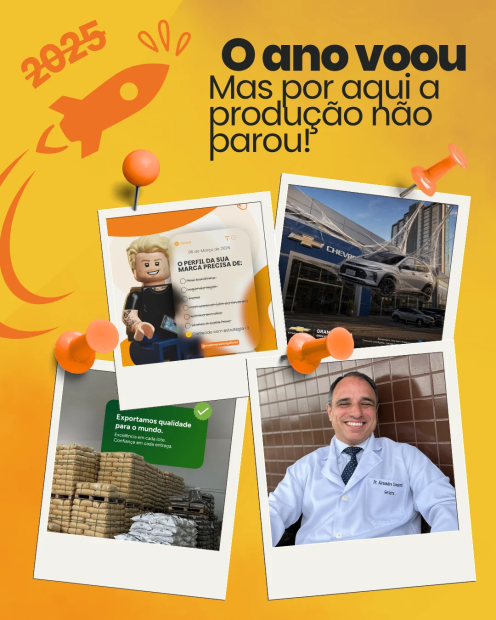
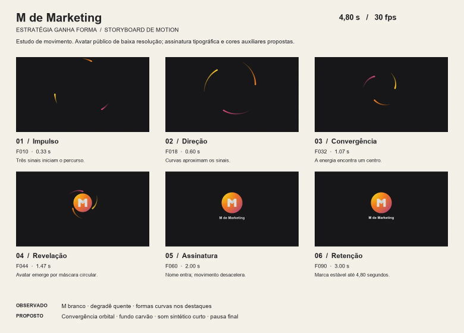
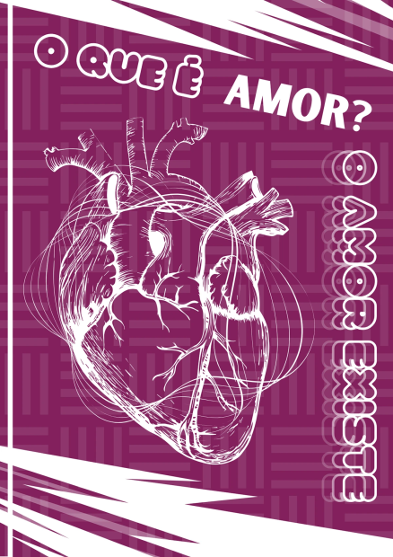
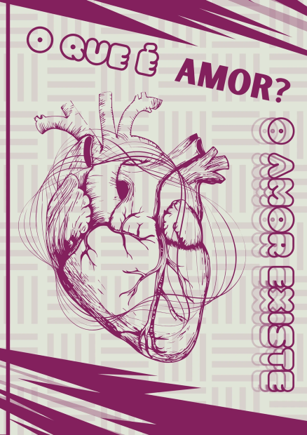
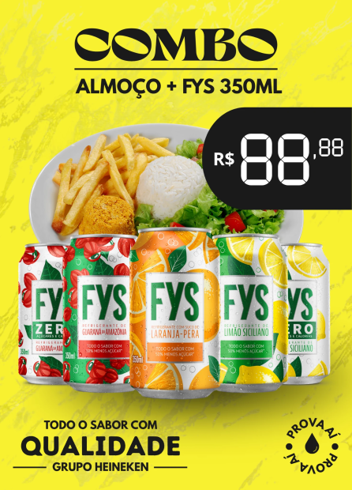

01 — Identidade / Embalagem
NÓA
Bebidas botânicas brasileiras
Sistema visual criado para equilibrar naturalidade, personalidade e reconhecimento em cada sabor.
Ver projetoDISPONÍVEL PARA PROJETOS
Identidades visuais, experiências digitais e peças editoriais
criadas para marcas que não querem parecer genéricas.

01 / TRABALHOS SELECIONADOS
Uma seleção de identidades, interfaces e experiências visuais desenvolvidas entre 2024 e 2026.
01 — Identidade / Embalagem
Bebidas botânicas brasileiras
Sistema visual criado para equilibrar naturalidade, personalidade e reconhecimento em cada sabor.
Ver projeto02 — UI/UX / Design de produto
Aplicativo conceitual para solicitar e acompanhar autorizações de saúde com clareza em cada etapa.
Ver projeto03 — Identidade / Editorial
Identidade visual para uma focacceria de bairro, com linguagem calorosa e bem-humorada feita para transformar comida artesanal em encontro.
Ver projeto




04 — Campanhas / Design gráfico
Campanhas, pôsteres e peças digitais construídas para diferentes linguagens e contextos de marca.
Ver seleção02 / SOBRE
Sou Harley Aguilar, designer visual brasileiro. Transformo conceitos em linguagens claras, consistentes e prontas para ganhar escala.
Minha prática reúne identidade visual, editorial, campanhas e experiências digitais.
EXPERIÊNCIA
4+anos criando projetos visuais
BASE
FORTALEZACeará, Brasil / trabalho remoto
IDIOMAS
PT / ENcomunicação em português e inglês
03 / COMO POSSO AJUDAR
01
Estratégia, identidade visual e aplicações de marca.
02
Interfaces, landing pages e experiências digitais intuitivas.
03
Campanhas, redes sociais, editorial e direção de arte.
Processo: descoberta → direção → sistema → aplicação
04 / CONTATO
SOCIAL MEDIA / EDIÇÃO DE VÍDEO
Conteúdo com intenção.
Edição com presença.
Edição de vídeo, narrativa visual e conteúdo adaptado às redes sociais. Uma seleção do meu projeto autoral, com resultados públicos e exemplos do que posso levar a uma equipe criativa.
Ver meu trabalho como social media ↗EDITAR.
CONECTAR.HUDEPLAY / HUDE_RPG▶
Métricas públicas · 06/10/2026 · Recorte dos 12 Shorts mais recentes no YouTube. Contagens arredondadas.